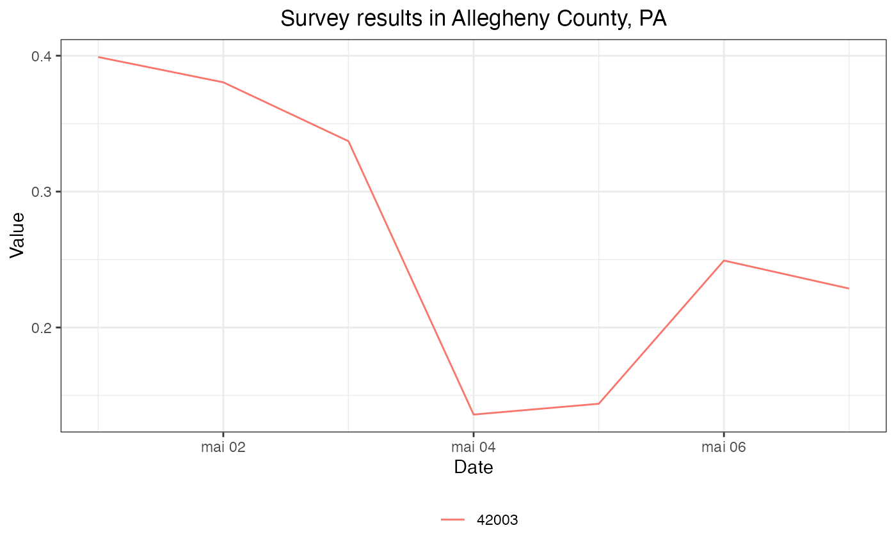

This package provides access to data frames of values from the COVIDcast API. Using the covidcast_signal() function, you can fetch any data you may be interested in analyzing, then use plot.covidcast_signal() to make plots and maps. Since the data is provided as a simple data frame, you can also wrangle it into whatever form you need to conduct your desired analyses using other packages and functions.
This package is not on CRAN yet, so it can be installed using the devtools package:
devtools::install_github("cmu-delphi/covidcast", ref = "main", subdir = "R-packages/covidcast")
Building the vignettes, such as this Getting Started guide, takes a substantial amount of time. They are not included in the package by default. If you wish to include vignettes, use this modified command:
devtools::install_github("cmu-delphi/covidcast", ref = "main", subdir = "R-packages/covidcast", build_vignettes = TRUE, dependencies = TRUE)
To obtain smoothed estimates of COVID-like illness from our Facebook survey for every county in the United States between 2020-05-01 and 2020-05-07, we can use covidcast_signal():
library(covidcast) library(dplyr) cli <- suppressMessages( covidcast_signal(data_source = "fb-survey", signal = "smoothed_cli", start_day = "2020-05-01", end_day = "2020-05-07", geo_type = "county") ) knitr::kable(head(cli))
| data_source | signal | geo_value | time_value | issue | lag | value | stderr | sample_size |
|---|---|---|---|---|---|---|---|---|
| fb-survey | smoothed_cli | 01000 | 2020-05-01 | 2020-09-03 | 125 | 0.8254101 | 0.1360033 | 1722.4551 |
| fb-survey | smoothed_cli | 01001 | 2020-05-01 | 2020-09-03 | 125 | 1.2994255 | 0.9671356 | 115.8025 |
| fb-survey | smoothed_cli | 01003 | 2020-05-01 | 2020-09-03 | 125 | 0.6965968 | 0.3247531 | 584.3194 |
| fb-survey | smoothed_cli | 01015 | 2020-05-01 | 2020-09-03 | 125 | 0.4282713 | 0.5485655 | 122.5577 |
| fb-survey | smoothed_cli | 01031 | 2020-05-01 | 2020-09-03 | 125 | 0.0255788 | 0.3608268 | 114.8318 |
| fb-survey | smoothed_cli | 01045 | 2020-05-01 | 2020-09-03 | 125 | 1.0495589 | 0.7086324 | 110.6544 |
covidcast_signal() returns a data frame. (Here we’re using knitr::kable() to make it more readable.) Each row represents one observation in one county on one day. The county FIPS code is given in the geo_value column, the date in the time_value column. Here value is the requested signal—in this case, the smoothed estimate of the percentage of people with COVID-like illness, based on the symptom surveys, and stderr is its standard error. See the covidcast_signal() documentation for details on the returned data frame.
Notice the use of suppressMessages() to hide progress reporting from the function as it downloads the data; if you download particularly large amounts of data, you may prefer to allow the progress reporting so you know how long to wait.
To get a basic summary of the returned data frame:
summary(cli)
## A `covidcast_signal` data frame with 7080 rows and 9 columns.
##
## data_source : fb-survey
## signal : smoothed_cli
## geo_type : county
##
## first date : 2020-05-01
## last date : 2020-05-07
## median number of geo_values per day : 1021The COVIDcast API makes estimates available at several different geographic levels, and covidcast_signal() defaults to requesting county-level data. To request estimates for states instead of counties, we use the geo_type argument:
cli <- suppressMessages( covidcast_signal(data_source = "fb-survey", signal = "smoothed_cli", start_day = "2020-05-01", end_day = "2020-05-07", geo_type = "state") ) knitr::kable(head(cli))
| data_source | signal | geo_value | time_value | issue | lag | value | stderr | sample_size |
|---|---|---|---|---|---|---|---|---|
| fb-survey | smoothed_cli | ak | 2020-05-01 | 2020-09-03 | 125 | 0.4607721 | 0.1591131 | 1606.000 |
| fb-survey | smoothed_cli | al | 2020-05-01 | 2020-09-03 | 125 | 0.6994761 | 0.0826180 | 7540.244 |
| fb-survey | smoothed_cli | ar | 2020-05-01 | 2020-09-03 | 125 | 0.7597720 | 0.1036828 | 4921.483 |
| fb-survey | smoothed_cli | az | 2020-05-01 | 2020-09-03 | 125 | 0.5669361 | 0.0618211 | 11220.959 |
| fb-survey | smoothed_cli | ca | 2020-05-01 | 2020-09-03 | 125 | 0.3649079 | 0.0228051 | 51870.138 |
| fb-survey | smoothed_cli | co | 2020-05-01 | 2020-09-03 | 125 | 0.6458274 | 0.0684792 | 10105.894 |
One can also select a specific geographic region by its ID. For example, this is the FIPS code for Allegheny County, Pennsylvania:
cli <- suppressMessages( covidcast_signal(data_source = "fb-survey", signal = "smoothed_cli", start_day = "2020-05-01", end_day = "2020-05-07", geo_type = "county", geo_value = "42003") ) knitr::kable(head(cli))
| data_source | signal | geo_value | time_value | issue | lag | value | stderr | sample_size |
|---|---|---|---|---|---|---|---|---|
| fb-survey | smoothed_cli | 42003 | 2020-05-01 | 2020-09-03 | 125 | 0.3990346 | 0.1050942 | 2635.136 |
| fb-survey | smoothed_cli | 42003 | 2020-05-02 | 2020-09-03 | 124 | 0.3804239 | 0.1073435 | 2589.751 |
| fb-survey | smoothed_cli | 42003 | 2020-05-03 | 2020-09-03 | 123 | 0.3370994 | 0.1046873 | 2552.011 |
| fb-survey | smoothed_cli | 42003 | 2020-05-04 | 2020-09-03 | 122 | 0.1359437 | 0.0638714 | 2568.443 |
| fb-survey | smoothed_cli | 42003 | 2020-05-05 | 2020-09-03 | 121 | 0.1438750 | 0.0669286 | 2482.389 |
| fb-survey | smoothed_cli | 42003 | 2020-05-06 | 2020-09-03 | 120 | 0.2492732 | 0.0890122 | 2530.457 |
This package provides convenient functions for plotting and mapping these signals. For example, simple line charts are easy to construct:
plot(cli, plot_type = "line", title = "Survey results in Allegheny County, PA")

For more details and examples, including choropleth and bubble maps, see vignette("plotting-signals").
Above we used data from Delphi’s symptom surveys, but the COVIDcast API includes numerous data streams: medical claims data, cases and deaths, mobility, and many others; new signals are added regularly. This can make it a challenge to find the data stream that you are most interested in.
The COVIDcast Data Sources and Signals documentation lists all data sources and signals available through COVIDcast. When you find a signal of interest, get the data source name (such as jhu-csse or fb-survey) and the signal name (such as confirmed_incidence_num or smoothed_wcli). These are provided as arguments to covidcast_signal() to request the data you want.
The COVIDcast API identifies counties by their 5-digit FIPS code and metropolitan areas by their CBSA ID number. (See the geographic coding documentation for details.) This means that to query a specific county or metropolitan area, we must have some way to quickly find its identifier.
This package includes several utilities intended to make the process easier. For example, if we look at ?county_census, we find that the package provides census data (such as population) on every county in the United States, including its FIPS code. Similarly, by looking at ?msa_census we can find data about metropolitan statistical areas, their corresponding CBSA IDs, and recent census data.
(Note: the msa_census data includes types of area beyond metropolitan statistical areas, including micropolitan statistical areas. The LSAD column identifies the type of each area. The COVIDcast API only provides estimates for metropolitan statistical areas, not for their divisions or for micropolitan areas.)
Building on these datasets, the convenience functions name_to_fips() and name_to_cbsa() conduct grep()-based searching of county or metropolitan area names to find FIPS or CBSA codes, respectively:
name_to_fips("Allegheny")
## Allegheny County
## "42003"name_to_cbsa("Pittsburgh")
## Pittsburgh, PA
## "38300"Since these functions return vectors of IDs, we can use them to construct the geo_values argument to covidcast_signal() to select specific regions to query.
You may also want to convert FIPS codes or CBSA IDs back to well-known names, for instance to report in tables or graphics. The package provides inverse mappings fips_to_name() and cbsa_to_name() that work in the analogous way:
fips_to_name("42003")
## 42003
## "Allegheny County"cbsa_to_name("38300")
## 38300
## "Pittsburgh, PA"See their documentation for more details (for example, the options for handling matches when counties have the same name).
If we are interested in exploring the available signals and their metadata, we can use covidcast_meta() to fetch a data frame of the available signals:
meta <- covidcast_meta() knitr::kable(head(meta))
| data_source | signal | time_type | geo_type | min_time | max_time | num_locations | min_value | max_value | mean_value | stdev_value | last_update | max_issue | min_lag | max_lag |
|---|---|---|---|---|---|---|---|---|---|---|---|---|---|---|
| changehc | smoothed_adj_outpatient_covid | day | county | 2020-02-01 | 2020-11-08 | 2545 | 0.000868 | 34.931010 | 0.3505072 | 0.6384764 | 1605255860 | 2020-11-13 | 4 | 286 |
| changehc | smoothed_adj_outpatient_covid | day | hrr | 2020-02-01 | 2020-11-08 | 306 | 0.000635 | 7.045493 | 0.2898596 | 0.3944807 | 1605255860 | 2020-11-13 | 5 | 286 |
| changehc | smoothed_adj_outpatient_covid | day | msa | 2020-02-01 | 2020-11-08 | 392 | 0.000506 | 12.866211 | 0.2540103 | 0.3769068 | 1605255861 | 2020-11-13 | 5 | 286 |
| changehc | smoothed_adj_outpatient_covid | day | state | 2020-02-01 | 2020-11-08 | 52 | 0.000358 | 3.016247 | 0.2723865 | 0.3158401 | 1605255861 | 2020-11-13 | 5 | 286 |
| changehc | smoothed_outpatient_covid | day | county | 2020-02-01 | 2020-11-08 | 2545 | 0.000868 | 30.886603 | 0.3252638 | 0.5665026 | 1605255860 | 2020-11-13 | 4 | 286 |
| changehc | smoothed_outpatient_covid | day | hrr | 2020-02-01 | 2020-11-08 | 306 | 0.000635 | 5.998379 | 0.2656566 | 0.3597191 | 1605255860 | 2020-11-13 | 5 | 286 |
The covidcast_meta() documentation describes the columns and their meanings. The metadata data frame can be filtered and sliced as desired to obtain information about signals of interest. To get a basic summary of the metadata:
summary(meta)
(We silenced the evaluation because the output of summary() here is still quite long.)
The COVIDcast API records not just each signal’s estimate for a given location on a given day, but also when that estimate was made, and all updates to that estimate.
For example, consider using our doctor visits signal, which estimates the percentage of outpatient doctor visits that are COVID-related, and consider a result row with time_value 2020-05-01 for geo_values = "pa". This is an estimate for the percentage in Pennsylvania on May 1, 2020. That estimate was issued on May 5, 2020, the delay being due to the aggregation of data by our source and the time taken by the COVIDcast API to ingest the data provided. Later, the estimate for May 1st could be updated, perhaps because additional visit data from May 1st arrived at our source and was reported to us. This constitutes a new issue of the data.
By default, covidcast_signal() fetches the most recent issue available. This is the best option for users who simply want to graph the latest data or construct dashboards. But if we are interested in knowing when data was reported, we can request specific data versions.
First, we can request the data that was available as of a specific date, using the as_of argument:
covidcast_signal(data_source = "doctor-visits", signal = "smoothed_cli", start_day = "2020-05-01", end_day = "2020-05-01", geo_type = "state", geo_values = "pa", as_of = "2020-05-07")
## A `covidcast_signal` data frame with 1 rows and 9 columns.
##
## data_source : doctor-visits
## signal : smoothed_cli
## geo_type : state
##
## data_source signal geo_value time_value issue lag value stderr
## 1 doctor-visits smoothed_cli pa 2020-05-01 2020-05-07 6 2.32192 NA
## sample_size
## 1 NAThis shows that an estimate of about 2.3% was issued on May 7. If we don’t specify as_of, we get the most recent estimate available:
covidcast_signal(data_source = "doctor-visits", signal = "smoothed_cli", start_day = "2020-05-01", end_day = "2020-05-01", geo_type = "state", geo_values = "pa")
## A `covidcast_signal` data frame with 1 rows and 9 columns.
##
## data_source : doctor-visits
## signal : smoothed_cli
## geo_type : state
##
## data_source signal geo_value time_value issue lag value
## 1 doctor-visits smoothed_cli pa 2020-05-01 2020-07-04 64 5.075015
## stderr sample_size
## 1 NA NANote the substantial change in the estimate, to over 5%, reflecting new data that became available after May 7 about visits occurring on May 1. This illustrates the importance of issue date tracking, particularly for forecasting tasks. To backtest a forecasting model on past data, it is important to use the data that would have been available at the time, not data that arrived much later.
By using the issues argument, we can request all issues in a certain time period:
covidcast_signal(data_source = "doctor-visits", signal = "smoothed_cli", start_day = "2020-05-01", end_day = "2020-05-01", geo_type = "state", geo_values = "pa", issues = c("2020-05-01", "2020-05-15")) %>% knitr::kable()
| data_source | signal | geo_value | time_value | issue | lag | value | stderr | sample_size |
|---|---|---|---|---|---|---|---|---|
| doctor-visits | smoothed_cli | pa | 2020-05-01 | 2020-05-07 | 6 | 2.321920 | NA | NA |
| doctor-visits | smoothed_cli | pa | 2020-05-01 | 2020-05-08 | 7 | 2.897032 | NA | NA |
| doctor-visits | smoothed_cli | pa | 2020-05-01 | 2020-05-09 | 8 | 2.956456 | NA | NA |
| doctor-visits | smoothed_cli | pa | 2020-05-01 | 2020-05-12 | 11 | 3.190634 | NA | NA |
| doctor-visits | smoothed_cli | pa | 2020-05-01 | 2020-05-13 | 12 | 3.220023 | NA | NA |
| doctor-visits | smoothed_cli | pa | 2020-05-01 | 2020-05-14 | 13 | 3.231314 | NA | NA |
| doctor-visits | smoothed_cli | pa | 2020-05-01 | 2020-05-15 | 14 | 3.239970 | NA | NA |
This estimate was clearly updated many times as new data for May 1st arrived. Note that these results include only data issued or updated between 2020-05-01 and 2020-05-15. If a value was first reported on 2020-04-15, and never updated, a query for issues between 2020-05-01 and 2020-05-15 will not include that value among its results.
Finally, we can use the lag argument to request only data reported with a certain lag. For example, requesting a lag of 7 days means to request only issues 7 days after the corresponding time_value:
covidcast_signal(data_source = "doctor-visits", signal = "smoothed_cli", start_day = "2020-05-01", end_day = "2020-05-07", geo_type = "state", geo_values = "pa", lag = 7) %>% knitr::kable()
## Warning: Fetching smoothed_cli from doctor-visits for 2020-05-03 in geography
## 'pa': no results## Warning: Fetching smoothed_cli from doctor-visits for 2020-05-04 in geography
## 'pa': no results| data_source | signal | geo_value | time_value | issue | lag | value | stderr | sample_size |
|---|---|---|---|---|---|---|---|---|
| doctor-visits | smoothed_cli | pa | 2020-05-01 | 2020-05-08 | 7 | 2.897032 | NA | NA |
| doctor-visits | smoothed_cli | pa | 2020-05-02 | 2020-05-09 | 7 | 2.802238 | NA | NA |
| doctor-visits | smoothed_cli | pa | 2020-05-05 | 2020-05-12 | 7 | 3.483125 | NA | NA |
| doctor-visits | smoothed_cli | pa | 2020-05-06 | 2020-05-13 | 7 | 2.968670 | NA | NA |
| doctor-visits | smoothed_cli | pa | 2020-05-07 | 2020-05-14 | 7 | 2.400255 | NA | NA |
Note that though this query requested all values between 2020-05-01 and 2020-05-07, May 3rd and May 4th were not included in the results set. This is because the query will only include a result for May 3rd if a value were issued on May 10th (a 7-day lag), but in fact the value was not updated on that day:
covidcast_signal(data_source = "doctor-visits", signal = "smoothed_cli", start_day = "2020-05-03", end_day = "2020-05-03", geo_type = "state", geo_values = "pa", issues = c("2020-05-09", "2020-05-15")) %>% knitr::kable()
| data_source | signal | geo_value | time_value | issue | lag | value | stderr | sample_size |
|---|---|---|---|---|---|---|---|---|
| doctor-visits | smoothed_cli | pa | 2020-05-03 | 2020-05-09 | 6 | 2.749537 | NA | NA |
| doctor-visits | smoothed_cli | pa | 2020-05-03 | 2020-05-12 | 9 | 2.989626 | NA | NA |
| doctor-visits | smoothed_cli | pa | 2020-05-03 | 2020-05-13 | 10 | 3.006860 | NA | NA |
| doctor-visits | smoothed_cli | pa | 2020-05-03 | 2020-05-14 | 11 | 2.970561 | NA | NA |
| doctor-visits | smoothed_cli | pa | 2020-05-03 | 2020-05-15 | 12 | 3.038054 | NA | NA |